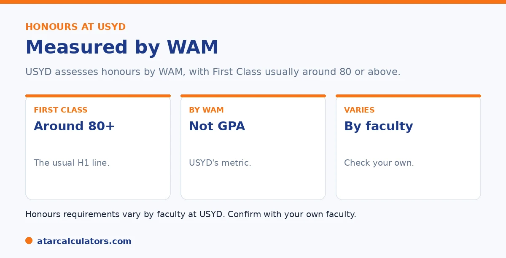

Here is the short version. Sydney measures honours and postgraduate requirements with the WAM, not a GPA. First-class honours typically needs a WAM around 80 or above, though the exact threshold varies by faculty. Other honours classes sit below that. Postgraduate courses set their own WAM requirements, which differ by course. So check the specific requirement for your faculty or program.
Honours and postgraduate entry at Sydney come with specific result requirements. The key is knowing they are set in WAM, since Sydney does not use a GPA.
Below is what to aim for. To track your WAM, use our USYD calculator.
Key takeaways
- Sydney measures these requirements with the WAM, not a GPA.
- First-class honours typically needs a WAM around 80+.
- The exact threshold varies by faculty.
- Other honours classes sit below first class.
- Postgraduate courses set their own WAM requirements.
- Always check the requirement for your faculty or program.
These requirements use the WAM
First, the key point. Sydney sets honours and postgraduate requirements using the WAM, its official measure, not a GPA. So any requirement you see is a WAM figure, out of 100.

If you have seen a GPA requirement quoted somewhere, treat it with caution, since Sydney itself works in WAM. See our guide on whether Sydney uses WAM or GPA.
First-class honours
The headline target is first-class honours. At many faculties, this typically needs a WAM around 80 or above. It is the top honours class and signals excellent performance.
The exact threshold varies by faculty, and some set it slightly differently. So 80 is a guide, not a universal rule. Always check your own faculty's honours requirement. See our guide on a good result at Sydney.
The other honours classes
Honours has more than one class. Below first class sit second-class honours, usually split into two divisions, and these have lower WAM thresholds. So a strong result that falls short of first class can still earn honours.
The exact bands vary by faculty, so check yours for the specific WAM each class needs. A distinction average, a WAM of 75 or above, often sits in the honours range. See our guide on the distinction average.
Want to track your WAM?
Try the USYD calculator →Postgraduate requirements
Postgraduate courses set their own entry requirements, usually as a WAM. These vary widely by course, with competitive programs asking for higher WAMs. Some also consider relevant experience or other criteria.
So there is no single postgraduate WAM requirement at Sydney. Check the specific course you are interested in for its threshold. See our guide on WAM requirements for honours for related context.
Reaching your target
If you are aiming for a specific WAM, focus your effort where it counts. Higher-credit units affect your WAM most, and some faculties weight later years more, so strong final results can lift you toward the threshold.
If your WAM is close to a target, targeted improvement can make the difference. See our guide on boosting your WAM.
Reaching an honours WAM works best as a deliberate plan rather than a hope. And a few principles make it achievable. Because the WAM is credit-weighted, your highest-credit units move it most. So consistent strong marks there matter more than the same marks in small units. Crossing grade boundaries is the most efficient lever. A unit sitting a mark or two below a boundary, lifted over it, nudges your WAM up for relatively little effort. So identifying near-boundary units late in a session and concentrating your work there gives the best return. Where a faculty weights later years more heavily, your final-year units carry extra influence. That means a strong finish can pull a borderline average up to the honours threshold even after a slower start, and conversely a weak final year can undo earlier good work. It is also worth confirming exactly which WAM your honours entry uses. This is because some programs look at your WAM in the relevant major rather than your whole degree. And a student stronger in their major may clear the bar on the measure that counts. Put together, the reliable path is clear. Know your exact target, and the WAM it applies to, early. Track your average as you go. Protect and prioritise your higher-credit and later-year units. And target the near-boundary results, where a small lift changes your grade. That turns an honours WAM from something you find out at the end into something you steer toward.
Entry into honours vs your honours class
It helps to separate two things. Entry into an honours year usually depends on your undergraduate WAM, often a credit-to-distinction average in the relevant discipline. The class of honours you graduate with, however, depends on your performance during the honours year itself.
So your undergraduate record gets you into honours, and your honours-year result determines whether you achieve First Class or another division. Both matter, but at different stages, and it is worth knowing which one a given requirement refers to.
WAM for scholarships and research
Research scholarships and competitive research places at USYD typically look for a strong honours result, often First Class, alongside a high WAM. These are competitive, so a higher WAM meaningfully improves your chances.
So if research or a scholarship is your goal, aim to maximise your WAM through your degree and to perform strongly in your honours year. A strong, consistent record is what opens research and scholarship pathways.
If you are just below the requirement
If your WAM sits just below an honours or postgraduate threshold, you are not necessarily excluded. Some programs weight your marks in the relevant discipline, consider recent improvement, or take relevant experience into account.
So it is worth contacting the faculty or program directly and asking how they assess borderline applicants. A strong upward trend, or strong results in the key subjects, can sometimes make the difference at a threshold.
Common questions
What WAM do you need for first-class honours at USYD?
Typically around 80 or above at many faculties, though the exact threshold varies. Sydney sets honours requirements using the WAM, not a GPA. So 80 is a guide; always check your own faculty's specific honours requirement.
Does USYD set honours requirements in GPA or WAM?
WAM. Sydney uses the Weighted Average Mark as its official measure, so honours and postgraduate requirements are set in WAM, not GPA. If you see a GPA requirement quoted, treat it with caution and check the WAM figure.
What are the other honours classes at USYD?
Below first class sit second-class honours, usually split into two divisions, with lower WAM thresholds. So a strong result short of first class can still earn honours. The exact bands vary by faculty, so check yours.
What WAM do you need for postgraduate study at USYD?
It varies by course, since each sets its own requirement, usually as a WAM. Competitive programs ask for higher WAMs, and some consider experience or other criteria. So check the specific course for its threshold.
Is a distinction average enough for honours at USYD?
Often it is in the honours range. A distinction average, a WAM of 75 or above, frequently sits within the honours classes, though first class typically needs around 80. Thresholds vary by faculty, so confirm with yours.
Track your WAM for honours
See where your Sydney average sits, from your marks and credit points. Free, and no signup.
Open the USYD calculator →Related guides
This guide is general information for students, not formal academic advice. The University of Sydney's official academic metric is the WAM, and it does not issue or calculate an official GPA. Any GPA you work out is an unofficial estimate for your own use. Grade bands and honours requirements can vary by faculty and change over time, so always confirm with the University of Sydney directly. Reviewed by the ATARCalculators Editorial Team.